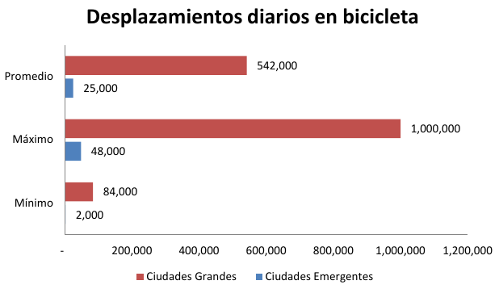
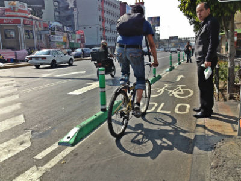
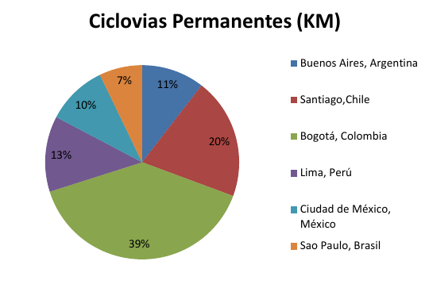
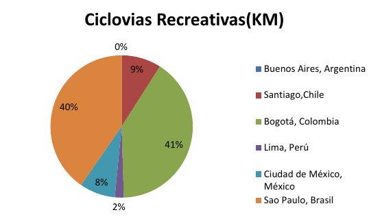

En el mundo se fabrican más de 100 millones de bicicletas anualmente, tres veces más que el número de automóviles, y únicamente en los países desarrollados son tomadas en cuenta como medio de transporte, dándoles la misma prioridad en la planeación y el desarrollo de la infraestructura vial que a autobuses y automóviles.
En países europeos como España, Dinamarca, Polonia, Holanda y Francia, y en algunos países asiáticos como en China, la bicicleta es un medio de transporte muy común entre sus habitantes. Y es que se cree que alrededor del mundo, 800 millones de bicicletas ruedan día con día, con ventajas no solo para las personas sino para el cuidado del medio ambiente.
Por nombrar algunas de las ventajas del uso de la bicicleta como medio de transporte están:
- Ventajas por salud
- Medio ambiente
- Cuidado de la economía familiar
Entonces, ¿porqué este medio de transporte no es tan usado por los ciudadanos? Muchos se quejan de la inseguridad de sus ciudades como obstáculo para usarla regularmente. Otros argumentan que el clima de sus ciudades no es el adecuado para andar en ellas y que incluso los conductores de autos no respetan su paso, y por eso pueden ser vulnerables de sufrir un accidente de tránsito por falta de cultura vial.
El Banco Interamericano del Desarrollo (BID) publica el primer estudio regional sobre transporte en América latina y el Caribe: Biciudades 2013, realizado en un total de 24 ciudades que participaron en una encuesta sobre el uso de las bicicletas en América Latina.
Entre el 0.4 y el 10% de la población utiliza la bicicleta como su principal medio de transporte en las ciudades pequeñas. En las ciudades de tamaño medio, el promedio de los desplazamientos diarios en bicicleta se situaba entre casi 2,000 y 48,000. El promedio en las ciudades más grandes de la región oscilaba entre 84,000 y un millón de desplazamientos al día, encabezado por México D.F. con el mayor número de desplazamientos.
Muestra de Ciudades
Ciudades Emergentes
- Asunción, Paraguay
- Barranquilla, Colombia
- Bucaramanga, Colombia
- Cochabumba, Bolivia
- Cuenca, Ecuador
- Goiania, Brasil
- La Paz, BCS, Mexico
- Managua, Nicaragua
- Manizales, Colombia
- Mar del Plata, Argentina
- MontegoBay, Jamaica
- Montevideo, Uruguay
- Pereira, Colombia
- E. Port of Spain, Trinidad y Tobago
- Salta, Argentina
- Santa Ana, El Salvador
- Trujillo, Peru
- Valdivia, Chile
Ciudades Grandes
- Bogotá, Colombia
- Buenos Aires, Argentina
- Lima, Perú
- Ciudad de México, México
- Santiago,Chile
- Sao Paulo, Brasil

Según el estudio Biciudades 2013, las ciudades tienen una infraestructura limitada para la movilidad en bicicleta, pero están tratando de promocionar esta alternativa. Sin embargo, los ciudadanos no necesariamente apoyan estas iniciativas. Muchas personas perciben las ventajas de las bicicletas, pero otras las asocian con un estatus socioeconómico bajo. Factores tales como la seguridad y el robo de bicicletas, entre otros, también aparecen como obstáculos.
Si las personas tuvieran la opción de usar la bicicleta con una infraestructura mínima que protegiera a los ciclistas del peligro de los vehículos, estamos seguros que se incrementaría su uso, no únicamente como una actividad recreativa, sino como un medio de transporte alternativo, eficiente, económico, rápido y no contaminante, cuyo requerimiento de obra pública es mínimo.

Retomando el estudio Biciudades desarrollado por el El BID y American University se consultaron a autoridades gubernamentales y grupos populares que fomentan el uso de las bicicletas en un total de 24 ciudades de América Latina y el Caribe.
Solo Las 11 ciudades participaron en el sondeo: Asunción, Cochabamba, Cuenca, La Paz (Baja California), Manizales, MontegoBay, Montevideo, Bogotá, Buenos Aires, Lima y México D.F. Entre ellas, seis informaron que ya tienen en marcha, o están planeando, programas de bicicletas compartidas: México D.F., Lima, Buenos Aires, Bogotá, Montevideo y Cuenca.
 
Bogotá lidera las ciudades latinoamericanas en la disponibilidad de carriles exclusivos para ciclistas, con un total de 376 kilómetros construidos.
Ciudad de México ocupa el 5to lugar con 96.6km en Ciclovías permanentes y 24 km en Ciclovía Recreativa dando un total de 120.6 kilómetros construidos.
En toda ciudad en crecimiento son necesarias grandes avenidas, sin embargo la creación de espacios para medios de transporte alternos, como lo es la bicicleta, la correcta planeación y distribución de estos espacios, nos ayuda a prevenir problemas futuros, a desahogar congestionamientos, y lo más importante, a brindarle seguridad a los millones de personas que ya utilizan este medio de transporte ya sea por recreación o por necesidad.
No importa cuánto gastemos en construir vías rápidas, siempre serán insuficientes para alojar la creciente cantidad de vehículos que entran a la ciudad. Todos los ciudadanos debemos hacer conciencia e impulsar y fomentar el uso de la bicicleta; contribuyamos todos para vivir mejor, sociedad y gobierno; el gobierno por su parte, brindándonos la infraestructura y la seguridad vial que requerimos y nosotros comprometiéndonos con el uso de medios de transporte alternos (bicis) como lo hacen hoy en día millones de mexicanos.
Fuentes
Biciudades: Un estudio regional acerca del uso de la bicicleta como medio de transporte en América Latinay el Caribe. Primera edición, Mayo de 2013